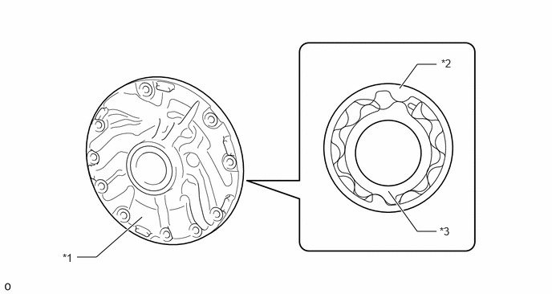

| Last Modified: 10-07-2025 | 6.11:8.1.0 | Doc ID: NM100000002GR3D |
| Model Year Start: 2024 | Model: Tacoma | Prod Date Range: [12/2023 - ] |
| Title: AL80F (AUTOMATIC TRANSMISSION / TRANSAXLE): AUTOMATIC TRANSMISSION SYSTEM: OIL PUMP; 2024 - 2026 MY Tacoma [12/2023 - ] | ||
OIL PUMP
CONSTRUCTION
(a) Mechanical Oil Pump
(1) The oil pump is driven continually by engine via torque converter assembly. It lubricates the planetary gear units and supplies operating fluid pressure for hydraulic control. The pump has sufficient capacity to supply the necessary fluid pressure throughout all speed ranges, as well as in reverse.
|
*1 |
Oil Pump Assembly |
*2 |
Oil Pump Driven Gear |
|
*3 |
Oil Pump Drive Gear |
- |
- |
(b) Electromagnetic Oil Pump (Oil Pump Assembly with Solenoid (EMOP)) (Models with Stop and Start System)
(1) An electromagnetic oil pump (EMOP) is used. When the engine is stopped during stop and start system control, the clutch and brake of the 1st gear are kept engaged by EMOP so that smooth launch is available and the consumption of fuel is saved.